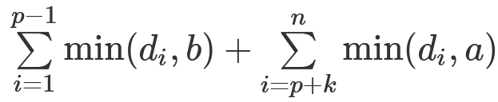

https://www.acwing.com/problem/content/4880/
有一个容量为 n 的背包和 m+1 种物品，每种物品都有无限多个。
物品种类编号为 0∼m。第 i 种物品的体积为 vi，价值为 wi。
在使用背包装入物品时，每种物品的限重如下：
第 0 种物品：重量忽略不计，在装入时没有重量限制。
第 1∼m 种物品：第 i 种物品的单个重量为 hi，如果该种物品的装入总重量超过 li，则视为超重。
现在，请你挑选物品装入背包，要求：
所有装入物品的总体积不得超过背包容量。
所有存在重量限制的物品均不得超重。
满足以上所有条件的前提下，所有装入物品的总价值尽可能大。
输出总价值的最大可能值。
注意审题，不要将 n,m 的含义弄混。
第一行包含四个整数 n,m,v0,w0。接下来 m 行，每行包含四个整数 li,hi,vi,wi。
一个整数，表示总价值的最大可能值。
前 4 个测试点满足 1≤n≤100，1≤m≤2。 所有测试点满足 1≤n≤1000，1≤m≤10，1≤li,hi,vi,wi≤100。
xxxxxxxxxx3110 2 2 127 3 2 100312 3 1 10
xxxxxxxxxx11241
xxxxxxxxxx21100 1 25 50215 5 20 10
xxxxxxxxxx11200
xxxxxxxxxx241
3using namespace std;4const int N = 1010;5
6int n, m, v, w;7int f[N];8
9int main() {10 cin >> n >> m >> v >> w;11 for (int i = v; i <= n; ++i) f[i] = f[i - v] + w;12
13 for (int i = 1; i <= m; ++i) {14 int l, h;15 scanf("%d%d%d%d", &l, &h, &v, &w);16 for (int j = n; j >= 0; j--) {17 for (int k = 1; k <= l / h && v * k <= j; ++k) {18 f[j] = max(f[j], f[j - v * k] + w * k);19 }20 }21 }22 cout << f[n];23 return 0;24}看到这道题，一眼就是背包问题，但是这个题目多了些条件。其实就是多重背包多了些条件，l和h就是确定了这个物品的数量。体积为0的物品预处理一下就行
https://www.acwing.com/problem/content/4881/
给定一个长度为 n 的整数序列 d1,d2,…,dn 以及三个整数 k,a,b。初始时，所有 di 均为 0。
你需要对序列依次进行 q 次操作，操作分为以下两种：
1 x y，将 dx 增加 y。
2 p，计算并输出 ∑i=1p−1min(di,b)+∑i=p+knmin(di,a)。
第一行包含 5 个整数 n,k,a,b,q。接下来 q 行，每行描述一个操作，格式如题面所述。
每个 2 p 操作，输出一行一个整数表示结果。
前 3 个测试点满足 1≤k≤n≤10，1≤q≤10。
所有测试点满足 1≤k≤n≤2×105，1≤b<a≤10000，1≤q≤2×105，1≤x≤n，1≤y≤100001≤p≤n−k+1。
xxxxxxxxxx915 2 2 1 821 1 231 5 341 2 152 261 4 271 3 282 192 3
xxxxxxxxxx3132634
xxxxxxxxxx715 4 10 1 621 1 531 5 541 3 251 5 262 172 2
xxxxxxxxxx21721
xxxxxxxxxx721
3using namespace std;4
5const int N = 2e5 + 10;6int n, k, a, b, q;7
8struct node {9 int l, r, w, mina, minb;10} tr[N * 4];11
12void build(int u, int l, int r) {13 tr[u] = {l, r};14 if (l == r) return;15 int mid = l + r >> 1;16 if (l <= mid) build(u << 1, l, mid);17 if (r >= mid + 1) build(u << 1 | 1, mid + 1, r);18}19
20void pushup(int u) {21 tr[u].mina = tr[u << 1].mina + tr[u << 1 | 1].mina;22 tr[u].minb = tr[u << 1].minb + tr[u << 1 | 1].minb;23}24
25void modify(int u, int x, int v) {26 if (tr[u].l == tr[u].r) {27 tr[u].w += v;28 tr[u].mina = min(tr[u].w, a);29 tr[u].minb = min(tr[u].w, b);30 return;31 }32 int mid = tr[u].l + tr[u].r >> 1;33 if (x <= mid) modify(u << 1, x, v);34 else modify(u << 1 | 1, x, v);35 pushup(u);36}37
38int queryl(int u, int l, int r);39
40int queryr(int u, int l, int r) {41 if (r < l) return 0;42 if (l <= tr[u].l && tr[u].r <= r) return tr[u].mina;43 int mid = tr[u].l + tr[u].r >> 1;44 int res = 0;45 if (l <= mid) res += queryl(u << 1, l, r);46 if (r >= mid + 1) res += queryr(u << 1 | 1, l, r);47 return res;48}49
50int queryl(int u, int l, int r) {51 if (r < l) return 0;52 if (l <= tr[u].l && tr[u].r <= r) return tr[u].minb;53 int mid = tr[u].l + tr[u].r >> 1;54 int res = 0;55 if (l <= mid) res += queryl(u << 1, l, r);56 if (r >= mid + 1) res += queryr(u << 1 | 1, l, r);57 return res;58}59
60int main() {61 cin >> n >> k >> a >> b >> q;62 build(1, 1, n);63 int op, x, y;64 for (int i = 0; i < q; ++i) {65 scanf("%d%d", &op, &x);66 if (op == 1) {67 scanf("%d", &y);68 modify(1, x, y);69 } else printf("%d\n", queryl(1, 1, x - 1) + queryr(1, x + k, n));70 }71 return 0;72}线段树需要维护的东西比较多，主要有三个
w记录已经加入的v，这项必须记录，因为可以多次添加v
mina表示当前区间内每个点min(v,a)的和
minb表示当前区间内每个点min(v,b)的和
每次更新时，需要将左右子区间的mina和minb相加即可，不要想复杂了！
https://www.acwing.com/problem/content/4877/
如果一个正整数的约数个数恰好为 3，则称该数为美丽数。
给定 n 个正整数 a1,a2,…,an，请你依次判断每个数是否是美丽数。
第一行包含整数 n。第二行包含 n 个整数 a1,a2,…,an。
共 n 行，其中第 i 行输出对 ai 的判断，如果 ai 是美丽数，则输出 YES，否则输出 NO。
前 6 个测试点满足 1≤n≤10。 所有测试点满足 1≤n≤105，1≤ai≤1012。
xxxxxxxxxx21324 5 6
xxxxxxxxxx31YES2NO3NO
xxxxxxxxxx341
3using namespace std;4typedef long long int LL;5const int N = 1e6 + 10;6
7int primes[N], cnt;8bool st[N];9
10void get_primes(int n) // 线性筛11{12 st[1] = true;13 for (int i = 2; i <= n; i++) {14 if (!st[i]) primes[cnt++] = i;15 for (int j = 0; primes[j] <= n / i; j++) {16 st[primes[j] * i] = true;17 if (i % primes[j] == 0) break;18 }19 }20}21
22int main() {23 int n;24 cin >> n;25 get_primes(N);26 while (n--) {27 LL x;28 cin >> x;29 int t = sqrt(x);30 if ((LL) t * t == x && st[t] == false) puts("YES");31 else puts("NO");32 }33 return 0;34}如果想要一个数只有3个约数，那么这个数必然是一个素数的平方
我们只需要判断一下这个数开根号之后是否是一个素数即可
通过线性筛把106以内的素数筛一遍，并通过st数组存储一下一个数是否是素数
https://www.acwing.com/problem/content/4878/
Alice 和 Bob 在玩一个游戏。
首先，给定一个长度为 n 的正整数数列 a1,a2,…,an。
随后，两人轮流展开行动，由 Alice 先手行动。
当轮到一人采取行动时，如果 a1=0，则该玩家输掉游戏，否则该玩家需要：
在 [2,n] 范围内选择一个整数 i。
将 a1 的值减少 1。
交换 a1 和 ai的值。
假设双方都采取最优策略，请你判断谁将获胜。
第一行包含整数 T，表示共有 T 组测试数据。每组数据第一行包含整数 n。
第二行包含 n 个整数 a1,a2,…,an。
每组数据输出一行结果，如果 Alice 获胜，则输出 Alice，如果 Bob 获胜，则输出 Bob。
前 3 个测试点满足 1≤T≤10，2≤n≤3。 所有测试点满足 1≤T≤2×104，2≤n≤105，1≤ai≤109，一个测试点的所有的 n 相加之和不超过 2×105。
xxxxxxxxxx7132231 14252 16375 4 4
xxxxxxxxxx31Bob2Alice3Alice
xxxxxxxxxx231
3using namespace std;4const int N = 1e5 + 10;5int n, g[N];6
7void solve() {8 cin >> n;9 int minn = 2e9, x;10 for (int i = 0; i < n; ++i) {11 scanf("%d", &g[i]);12 minn = min(minn, g[i]);13 }14 if (minn == g[0]) puts("Bob");15 else puts("Alice");16}17
18int main() {19 int t;20 cin >> t;21 while (t--) solve();22 return 0;23}最小值是最快变成 0 的，如果第一个元素是最小值则先手必败，否则后手必败
若第一个元素是最小值且不是 0 (是 0 直接输了，没必要讨论)：
则先手 Alice 减 1 后，不管与谁交换值，交换后都比之前大， 由于第一个元素不是 0 , 所以交换后轮到 Bob 也必然不是 0。而 Bob 只需要做一件事，不断将最小值扔回给 Alice ， 则 Alice 必然最先达到 0， 必败。
若第一个元素不是最小值
则 Alice 在减 1 后， 直接选择最小值扔给 Bob，转变为 Bob 先手拿到最小值，则转变上面那种情况，必败。
https://www.acwing.com/problem/content/4874/
给定一个 n 个点 m 条边的不含重边和自环的无向图。
点的编号为 1∼n，边的编号为 1∼m。
在 t=0 时刻，你位于 1 号点。
你的任务是尽可能早的抵达 n 号点。
第 i 条边连接点 ai 和点 bi，通过此边需要花费的时间为 ci。
在整个移动过程中，你只有在整数时刻才能离开某一点前往另一点。
此外，第 i 个点有 ki 个禁止离开时刻。
在每个点的禁止离开时刻，你无法离开该点前往其它点。
请你计算抵达 n 号点的最早可能时刻。
第一行包含两个整数 n,m。
接下来 m 行，其中第 i 行包含三个整数 ai,bi,ci，表示第 i 条边连接点 ai 和 bi，通过此边需要花费的时间为 ci。
接下来 n 行，其中第 i 行首先包含一个整数 ki，表示第 i 个点有 ki 个禁止离开时刻，随后包含 ki 个互不相同的升序排序的整数 tij，表示所有禁止离开时刻。
一个整数，表示抵达 n
号点的最早可能时刻。
如果无法抵达 n
号点，则输出 -1。
前 4 个测试点满足 2≤n≤4。 所有测试点满足 2≤n≤105，0≤m≤105，1≤ai,bi≤n，ai≠bi，1≤ci≤104 0≤ki≤105，0≤tij<109，所有 ki 相加之和不超过 105。
xxxxxxxxxx1114 621 2 231 3 341 4 852 3 462 4 573 4 38091 3102 3 4110
xxxxxxxxxx117
从点 1 到点 4，考虑如下三条路线：
在时刻 0 通过第 3 条边离开点 1，并于时刻 8 抵达点 4。
在时刻 0 通过第 2 条边离开点 1，并于时刻 3 抵达点 3，由于点 3 在时刻 3,4 禁止离开，所以在时刻 5 通过第 6 条边离开点 3，并于时刻 8 抵达点 4。
在时刻 0 通过第 1 条边离开点 1，并于时刻 2 抵达点 2，在时刻 2 通过第 5 条边离开点 2，并于时刻 7 抵达点 4。
最佳方案为第三条路线，抵达点 4 的最早可能时刻为 7。
xxxxxxxxxx513 121 2 33041 350
xxxxxxxxxx11-1
xxxxxxxxxx671
3using namespace std;4typedef pair<int, int> PII;5const int N = 1e5 + 10, M = 2 * N;6
7int n, m, h[N], e[M], ne[M], w[M], idx, dist[N];8bool st[N];9vector<int> delay[N];10
11void add(int a, int b, int c) {12 e[idx] = b;13 ne[idx] = h[a];14 w[idx] = c;15 h[a] = idx++;16}17
18int add_delay(int ver, int distance) {19 for (auto s: delay[ver]) {20 if (s == distance) distance++;21 else if (s > distance) break;22 }23 return distance;24}25
26void dijkstra() {27 memset(dist, 0x3f, sizeof dist);28 priority_queue<PII, vector<PII>, greater<PII> > q;29 q.push({0, 1});30 dist[0] = 1;31 while (q.size()) {32 auto t = q.top();33 q.pop();34 int ver = t.second;35 if (st[ver]) continue;36 else st[ver] = true;37 int distance = add_delay(ver, t.first);38 for (int i = h[ver]; ~i; i = ne[i]) {39 int j = e[i];40 if (dist[j] > distance + w[i]) {41 dist[j] = distance + w[i];42 q.push({dist[j], j});43 }44 }45 }46}47
48int main() {49 cin >> n >> m;50 memset(h, -1, sizeof h);51 for (int i = 0; i < m; ++i) {52 int a, b, c;53 scanf("%d%d%d", &a, &b, &c);54 add(a, b, c);55 add(b, a, c);56 }57 for (int i = 1; i <= n; ++i) {58 int k;59 scanf("%d", &k);60 delay[i].resize(k);61 for (int j = 0; j < k; ++j) scanf("%d", &delay[i][j]);62 }63 dijkstra();64 if (dist[n] == 0x3f3f3f3f) cout << -1;65 else cout << dist[n];66 return 0;67}
https://www.acwing.com/problem/content/4875/
给定一个 n 个点的加权有向图，点的编号为 1∼n。
图中任意两点之间都有两条方向相反的边连接两点。从点 i 到点 j 的边的长度为 aij。
给定一个 1∼n 的排列 x1,x2,…,xn。
你需要对该图依次进行 n 个操作。
其中，第 i 个操作是将点 xi 以及该点的所有入边和出边从图中移除。
在执行每一个操作之前，你还需要进行如下计算：
对于每个当前剩余点对 (u,v)，计算从点 u 到点 v 的最短路长度。
将这些最短路长度全部相加得到最短路之和。
注意：
剩余点对 (u,v)：两个还未被移除的点 u,v（u≠v）组成的点对。(u,v)和 (v,u)是两个不同点对，需分别计算最短路长度并计入最短路之和。
n 个操作是按顺序依次执行的，前面的操作会对后面的计算产生影响。
请你输出执行每个操作前计算得到的最短路之和。
第一行包含整数 n。
接下来 n 行，每行包含 n 个整数，其中第 i 行第 j 个数为 aij。
最后一行包含 n 个整数 x1,x2,…,x**n。
共一行，输出 n 个整数，其中第 i 个整数表示执行第 i 个操作之前，计算得到的最短路之和。
前 4 个测试点满足 1≤n≤4。 所有测试点满足 1≤n≤500，1≤aij≤105，aii=0，1≤xi≤n，保证 x1∼xn 是一个 1∼n 的排列。
xxxxxxxxxx3112031
xxxxxxxxxx110
xxxxxxxxxx41220 534 041 2
xxxxxxxxxx119 0
xxxxxxxxxx61420 3 1 136 0 400 142 4 0 151 1 1 064 1 2 3
xxxxxxxxxx1117 23 404 0
341
3using namespace std;4typedef long long LL;5const int N = 510;6
7int n;8int d[N][N];9int p[N];10LL ans[N];11bool st[N];12
13int main() {14 scanf("%d", &n);15 for (int i = 1; i <= n; i++)16 for (int j = 1; j <= n; j++)17 scanf("%d", &d[i][j]);18 for (int i = 1; i <= n; i++) scanf("%d", &p[i]);19
20 for (int u = n; u; u--) {21 int k = p[u];22 st[k] = true;23 for (int i = 1; i <= n; i++)24 for (int j = 1; j <= n; j++)25 d[i][j] = min(d[i][j], d[i][k] + d[k][j]);26
27 for (int i = 1; i <= n; i++)28 for (int j = 1; j <= n; j++)29 if (st[i] && st[j])30 ans[u] += d[i][j];31 }32 for (int i = 1; i <= n; i++) printf("%lld ", ans[i]);33 return 0;34}